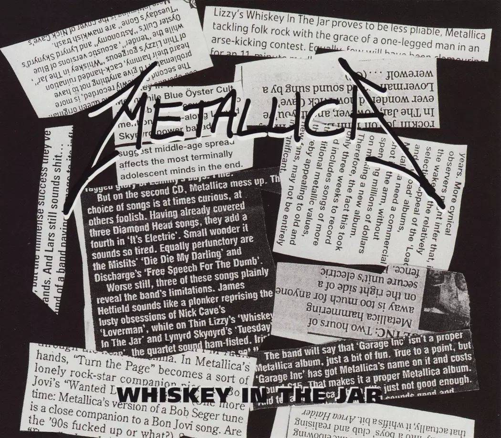
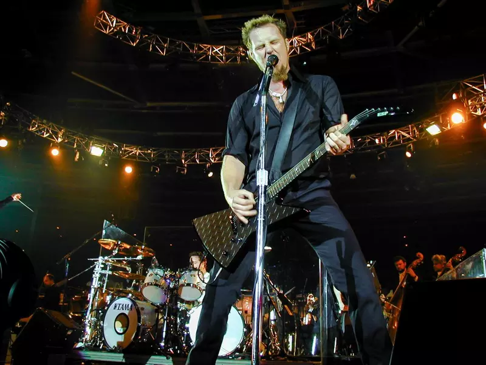

A Whiskey in the Jar egy hagyományos ír népdal, amelyet az évek során számos előadó feldolgozott. A legismertebb rockváltozatot a Thin Lizzy készítette el az 1970-es években, amely később a Metallica számára is inspirációt jelentett.
A Metallica feldolgozása 1998-ban jelent meg a Garage Inc. című feldolgozásalbumon. A zenekar megőrizte a dal dallamvilágát, ugyanakkor saját, erőteljes gitárhangzással és modern metal stílussal egészítette ki azt.
A dal hatalmas sikert aratott, és sok országban a rádiók kedvencévé vált. A Whiskey in the Jar olyan hallgatókhoz is eljutott, akik korábban nem ismerték a Metallica zenéjét.
A feldolgozás 2000-ben elnyerte a Best Hard Rock Performance Grammy-díjat. Ez volt a Metallica negyedik Grammy-győzelme, és egyben az egyik legsikeresebb feldolgozásuk szakmai szempontból.
A Whiskey in the Jar máig a Metallica egyik legnépszerűbb feldolgozásdala. A Grammy-díj és a kereskedelmi siker jól mutatja, hogy a zenekar nemcsak saját szerzeményeivel, hanem klasszikus dalok újraértelmezésével is képes volt maradandót alkotni.


